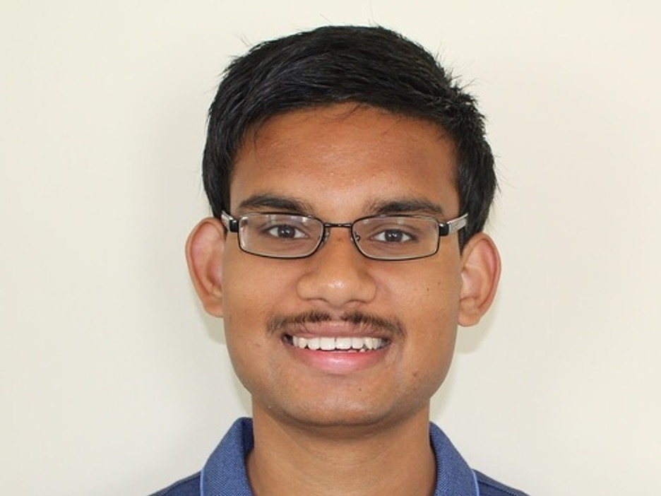
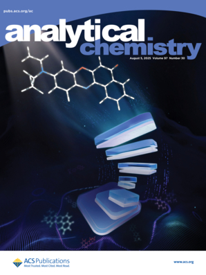

Ph.D. Student in Computer Science, North Carolina State University
Generative Intelligent Computing (GIC) Lab and Molecular Analytics & Photonics (MAP) Lab
Hi! I'm Obblivignes Kanchanadevi Venkataraman (Vignes KV for short), a Ph.D. student in Computer Science at NC State. I am co-advised by Dr. Dongkuan Xu in the Generative Intelligent Computing (GIC) Lab and Dr. Yang Zhang in the Molecular Analytics and Photonics (MAP) Lab.
I build physics-informed generative AI that is judged by how faithfully it models the physical world, starting with spectroscopic single-molecule localization microscopy (sSMLM).
Mainstream AI evaluates diffusion models and U-Nets on benchmark scores such as F1 or FID, which say little about whether an output obeys physics; physical and biomedical imaging, in turn, have been slow to adopt modern generative AI. My work sits in that gap. I pair Monte Carlo simulators and digital twins of real optical systems with denoising and diffusion models, then measure success in physical terms: localization precision, spectral accuracy, robustness at low signal-to-noise, and transfer from simulation to experimental data. In teaching, I hope to bring applied machine learning to students through project-based courses built on real scientific data.
Opportunities. I'm open to industry research roles and internships in computer vision, generative models and AI for science. Feel free to reach out!
Outside research, I enjoy chess, video games, swimming, hiking and time with friends.
A connected line of work on physics-based simulation and deep learning denoisers for spectroscopic single-molecule localization microscopy (sSMLM), each project building on the last.

Cover article, Analytical Chemistry 97(30), Aug 2025